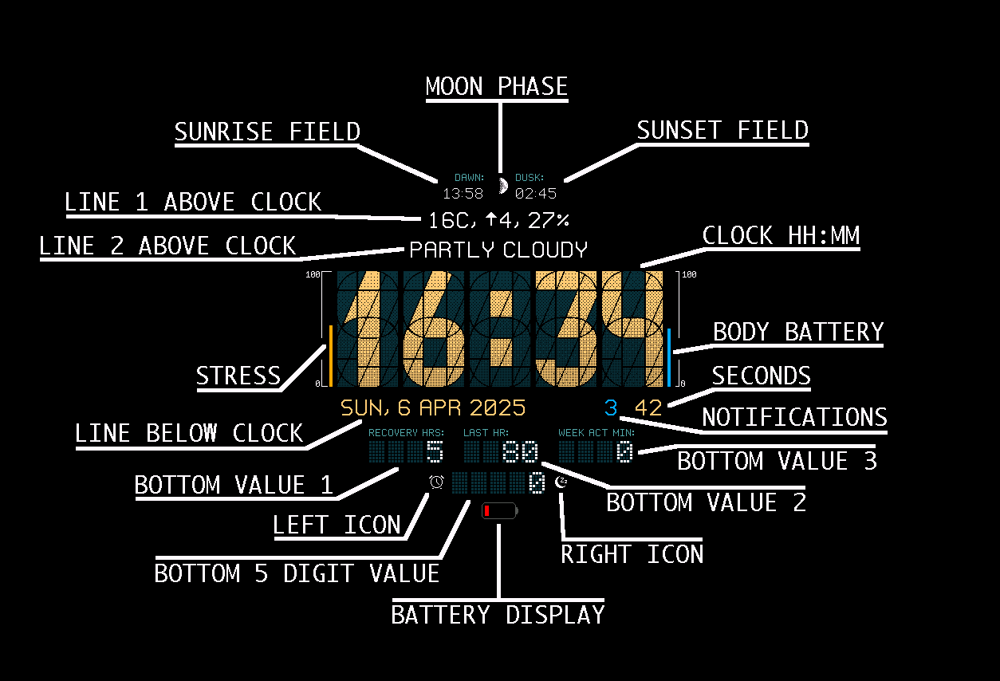

1.1.0 How do I change the settings? Where are the settings?üîó
The settings is only available through the Garmin Connect IQ app. Go to the page for the watch face in Connect IQ and look for the big blue Settings button.
You can also find it if you go to Device -> My Watch Faces -> Segment34 MkII / MAX
The settings can not be changed on the watch itself.
1.1.1 Do I need to buy you a coffee to unlock features of the watch face?üîó
No, everything is included for free. Donating money / buying coffee through ko-fi does not unlock anything as there is nothing to unlock, everything is already included. You are however very welcome to support me anyway if you like the watch face:
1.2.0 How does the custom themes work?üîó
Custom themes are best created with the Theme designer. When it looks they way you want just copy the string of color codes at the bottom and enter them into the "Custom colors" field in settings for the watchface. Make sure to also select "Custom colors" as the theme.
1.2.1 I tried the custom theme and now it's all red green blue and says THEME ERROR, why?üîó
If the watchface looks like this and/or says THEME ERROR:
Then you have an error with the custom theme field. Use the Theme designer to create the string of color codes to put in this field and make sure you have copy/pasted without any spaces on either side.
1.3.0 What are that field called in settings? What is that number?üîó
Most fields can be configures in settings what data they should display.
This picture explains what everything is called:

For watches with an AMOLED screen you have two more fields shown in the Always On Display (if activated). These are called "Always On (below clock)" and "Second Always On Field (to the right)".
Depending on the setting "Top part shows" you may have a histogram at the top instead of the two small fields and moon phase.
1.3.1 Can I press values to open widgets on the watch?üîó
Yes, but you have to configure what to open in settings (it's towards the bottom on the settings screen). There are 5 areas that when pressed can open something:
2.0.0 Disappearing or hidden fieldsüîó
2.1.0 Why are seconds disappearing?üîó
If you have a watch with a Memory In Pixel (MIP) display, seconds can be displayed continuously. However, doing so uses a bit more battery so I have disabled it by default. If you want to always see seconds at the cost of slightly less battery life you can enable "Show Seconds in Inactive mode (MIP Screens only)" in settings.
If you have a AMOLED screen you can enable the Always On Display to always see the hours and minutes, but updating the screen every second is not possible (this is a limitation from Garmins side, not with this watch face).
2.2.0 I added the value X, and it doesn't show up, why?üîó
If a specific value does not show up (you see an empty spot instead) it's most likely because your watch does not have that value available. As a watch face developer there is nothing I can do to make it available.
2.3.0 Why is weather (or sunset/sunrise) disappearing after a while? Why is the top part of the screen empty?üîó
The weather fields, including also sunset and sunrise, need weather data to be able to display something. This data comes from Garmins Weather API which in turn fetches the data over bluetooth from your phone running the Garmin Connect app. If the weather data doesn't show up, make sure your watch is connected to your phone via bluetooth. You can also try restarting the watch if you can't get it to work.
3.0.0 Commonly requested featuresüîó
3.1.0 Can you translate the watch to <language>?üîó
I might do that in the future, but it's a lot of work, especially for languages that requires more letters than A-Z. The fonts I use all have hand drawn letters in each font size. This means adding just a few Èážȳ Łëṱțẹrš is a lot of work. I have it on my list but no promises for when this might happen.
3.2.0 Will you add support for Open Weather API?üîó
Not short term at least. I don't want to add the complexity having multiple weather data sources would mean. I've also seen that other watch faces with support for it have received quite a lot of negative reviews from users that can't figure out how to get a API token which makes me a bit less keen on working on this...
3.3.0 Can you make the font larger / configurable?üîó
You can check out my other watchface Segment34 MAX, it is basically the same but with larger text.
4.0.0 CGM Connect Widget integrationüîó
4.1.0 How do I make the CGM fields work?üîó
These fields get data from CGM Connect Widget, a separate app you must install and configure on your watch. Make sure you read the full description for CGM Connect Widget and set it up properly. You can also look at the documentation at https://cgmconnect.exparrot.de/
Link copied!